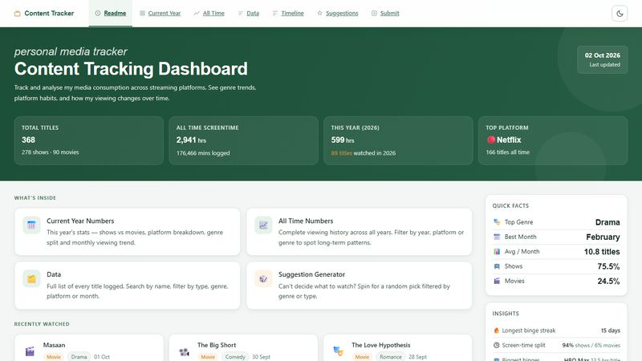
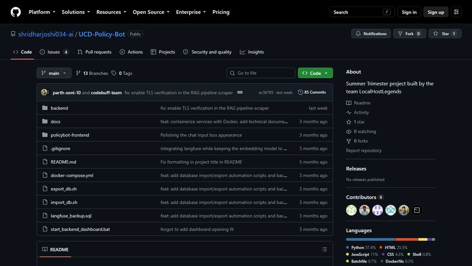
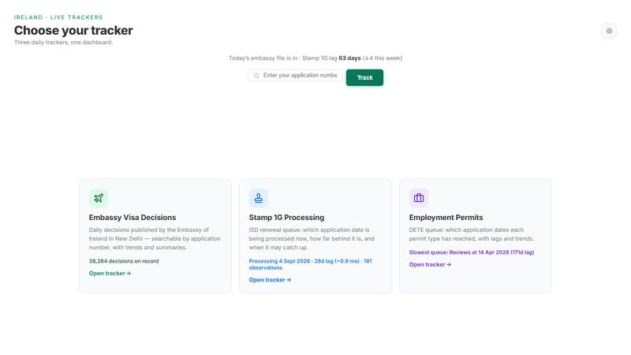
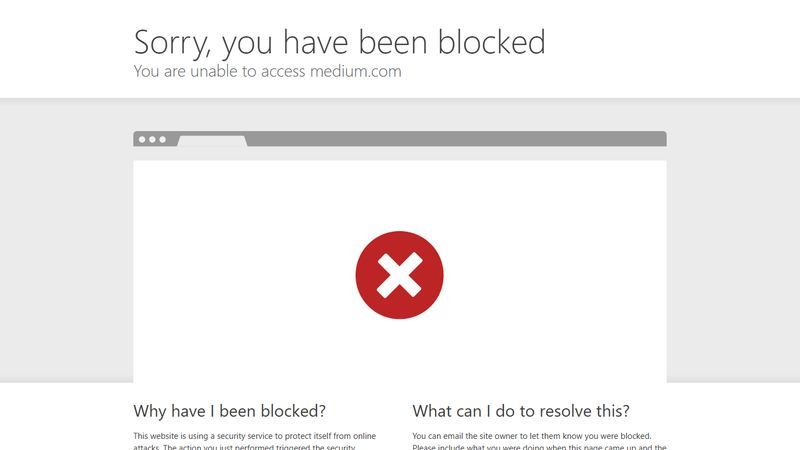
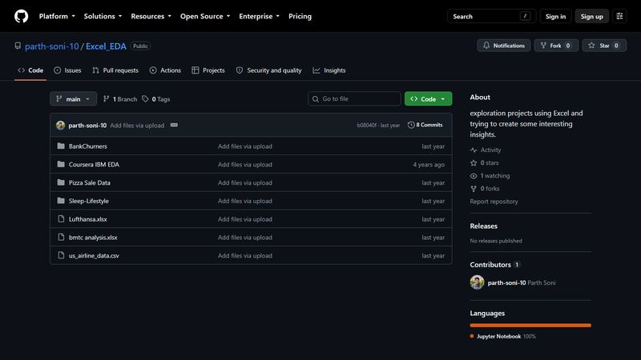
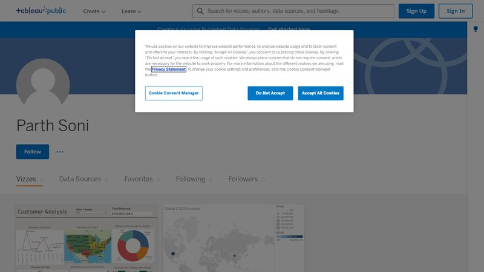
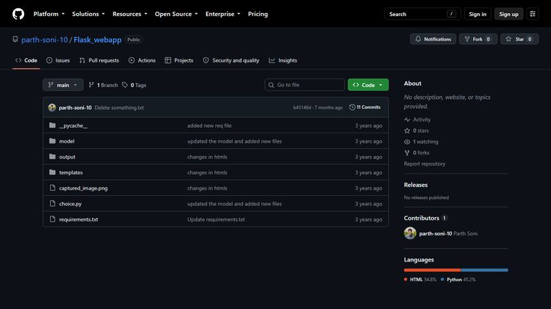

Data Analyst • Dublin, Ireland
Parth Soni, Data Analyst portfolio. Making data speak clearly.
From raw CSV files to boardroom-ready dashboards. I translate complexity into clarity, and numbers into decisions.
Profile: Parth Shirish Soni
University College Dublin • 2025-2026
“Data is only as powerful as the story it tells.”
Connect: Parth Soni
GitHub: @parth-soni-10
Building data tools in public
Python, SQL & dashboard projects, from F1 telemetry pipelines to live-scraping trackers. … repos • … followers
01About
Driven
by Data.
Hey, I’m Parth 👋. Data Analyst in the making. Storyteller at heart. I’m currently pursuing my MSc in Computer Science (Negotiated Learning) at University College Dublin 🎓, and my mission is simple: take messy, chaotic data and turn it into something that actually means something.
I live in the space between spreadsheets and strategy, building dashboards, writing queries, and connecting dots that others miss. If there’s a pattern hiding in the noise, I’ll find it.
Three words own my weekends: Formula 1. Tennis. Counter-Strike. Whether it’s dissecting a pit-stop strategy, tracking a Grand Slam run, or watching a clutch round unfold. Sports aren’t just entertainment for me, they’re data in motion.
Certified avgeek and general machine enthusiast 🏍️✈️. Planes, trains, bikes, cars: if it’s made of metal and it moves, I’m already fascinated. And when I’m not doing any of that? Colour-coded folders, sci-fi binges 🚀, and the quiet satisfaction of a perfectly cleaned dataset.
Writing on Medium
I publish F1 race weekend breakdowns and sharp, data-driven insights for fellow fans. Every qualifying, every race, every Monday debrief.
2025-2026
MSc Computer Science
University College Dublin, Ireland
Data Analytics, ML, Python, SQL, Power BI
2019-2023
B.Tech Computer Science & Engineering
Dayananda Sagar University, Bengaluru
CGPA: 8.15, Programming, Databases, Data Science
02Experience
Professional
Experience
02 roles
ANKO (KAS Services)
Inventory Analyst, Intern
- Handled execution, deployment, and monitoring of key supply chain metrics for a new division of products with a weekly sales revenue of ~1.8 million AUD.
- Analyzed demand trends and optimized inventory planning to ensure timely product availability during peak periods like Mother’s Day, Anzac Day, and Christmas.
- Collaborated with cross-functional teams to determine that an average 15% increase in inventory was needed to meet demand and prevent stockouts.
- Performed shrinkage analysis to identify inefficiencies in the supply chain; implemented corrective measures that reduced shrinkage by 7% and helped minimize stockouts, driving profitability.
- Built monitoring systems for real-time stock and business metric visibility across the division.
Nokia
Technical Writer, Intern
- Streamlined and redesigned over 70 key product documents and graphics as part of the company rebranding, incorporating new brand elements to create visually compelling marketing collateral.
- Created 3 comprehensive user manuals for new products from scratch by collaborating closely with the R&D team; supported the development of installation guides and troubleshooting documentation.
- Played a key role in developing visually rich images, diagrams, and infographics to enhance the clarity of complex technical concepts.
- Replaced 2 GIFs as part of the rebranding initiative, updated imagery in over 25 product guides, and implemented weekly revisions based on R&D input.
03Projects
Selected Projects
10 worksContent Tracking Dashboard
Live • 2024-Current
Built an end-to-end personal media analytics dashboard in vanilla HTML, CSS and JavaScript over a Cloudflare Worker reading a D1 database, turning 375+ logged titles into calculated KPIs, derived metrics, year-over-year comparisons, dynamic filtering and interactive visualisations across six analytics pages — no framework and no build step.
UCD PolicyBot
May-Aug 2026
RAG chatbot running 100% locally: BGE-M3 embeddings (dense + lexical) stored in a Qdrant vector database feed a Qwen2.5-1.5B SLM served by Ollama — the lowest-latency pick from four stress-tested local models — to answer UCD academic and admin policy questions, with mandatory citation (URL + page number) and answers grounded in retrieved context (the model abstains when the docs do not support an answer). Built a scraping and parsing pipeline with BeautifulSoup, markdownify, and PyMuPDF (pymupdf4llm) to convert 200+ policy docs to structured Markdown, preserving hierarchical structure for downstream vector indexing. Automated dedup and validation checks cut malformed records by ~30% and pushed retrieval precision above 80%.
Irish Visa Decision Tracker
Live • Personal Project
Tracks visa decisions published daily by the Embassy of Ireland, New Delhi, turning a flat daily spreadsheet (no history, no search, no trends) into a searchable, browsable dashboard. A GitHub Actions scraper runs 4× daily to fetch the embassy’s ‘.ods’ file, handle weekends and public holidays gracefully, and upsert records into a Google Sheet (the database). The Apps Script Web App exposes a clean HTTP API read by a four-tab dashboard: live snapshot, daily summary, full history with date-picker, and a suggestions form.
Formula 1 Telemetry Analysis
Live • Jan 2026-Present
Built an end-to-end telemetry analytics pipeline using Python, FastF1, pandas, and NumPy to collect, clean, transform, and analyse race telemetry across the 2026 Formula 1 season, publishing weekly data-driven performance reports. Developed 9+ visualisation types including lap-time evolution, tyre strategy analysis, minisector dominance, cumulative lap delta, and sector performance, translating complex datasets into audience-friendly visual stories through 10+ published articles on Medium.
Excel & Python EDA

Cleaned and analysed seven real-world datasets — bank churn, US airline on-time performance, Bangalore BMTC transit, pizza sales, sleep health, Lufthansa, and an IBM Coursera fleet inventory — in Excel and pandas, fixing missing values, outliers, and type mismatches before touching a chart. Tableau charts surface the correlations worth reporting; every workbook and notebook lives in the repo.
Interactive Tableau Dashboards

Two dashboards published on Tableau Public: a customer analysis dashboard and a CO2 emissions view. Filters, parameters, and calculated fields let viewers explore the data themselves rather than just reading a chart — the customer analysis dashboard has collected 24 loves from the Tableau community.
Pink Eye Detection: CNN

Developed a Convolutional Neural Network to classify eye images as healthy or infected with conjunctivitis. Implemented Conv2D, MaxPooling, ReLU, Dropout, and Dense layers; trained on a labeled dataset of healthy and infected eyes. Integrated with a Flask app for real-time camera input, allowing users to self-screen and take timely action.
cents.: Personal Expense Tracker
Live • 2026Built a privacy-first personal expense tracker with no framework and no build step. Just vanilla ES modules. Type a plain-language entry like “lidl groceries 4.47 revolut” and it auto-parses amount, category, and payment method. Data stays on the device in localStorage, with optional cloud sync to a Cloudflare KV store and a private GitHub mirror as the backup copy, across separate profiles and locked behind a PIN or Face ID / fingerprint.
RBI Weekly Dashboard
Live • Personal ProjectThe Reserve Bank of India publishes a new report as a raw spreadsheet every week — no history, no comparison. A scheduled job fetches each Friday's figures once the report lands (reserves, gold, the rupee against the dollar and euro, the main market indexes, crude-import estimates and FII flows, plus the World Bank's quarterly external-debt rankings) and commits whatever changed, so the dashboard shows what moved and by how much rather than one week in isolation. Trend lines and a searchable 10/26/52-week history, a tab that compares any two Fridays metric by metric, RBI MPC and Fed decisions annotated onto the rupee chart, an RSS feed of new weeks, and an installable build that still renders the last week it fetched when the network is down.
CSNL Module Picker
Live • UCDA module picker for UCD Computer Science students that builds a clash-free weekly timetable — and nothing about it is hardcoded. Class timings, offerings, module titles and the academic year are fetched live from UCD's General Reference Timetable on every load, and the module list comes from UCD's own CSNL page, re-read on every request and daily by a scheduled function, so new modules appear and retired ones disappear without a code change. Only the target year's timetable is ever served: when UCD has published the year but not the schedule, a module says it has no timetable rather than showing last year's times, and any module code can be added by hand.
Tip: click a title or use the ↑ ↓ arrow keys to browse · your pick stays highlighted · auto-playing
04Live Dashboard
Analytics
Dashboard.
A live slice of my Content Tracking Dashboard: … titles, read from the dashboard's own store rather than a copy of it, so these are its numbers and not a second opinion on them. The filters below re-compute every metric and chart from that data.
Open Full Dashboard →Titles Tracked
…
Hours Watched
…
Shows Watched
…
Movies Watched
…
Hours Watched: monthly trend
per month · All Time
Hours by Genre
all genres · All Time
05Skills
What I
Bring.
Technical
Non-Technical
06Certifications